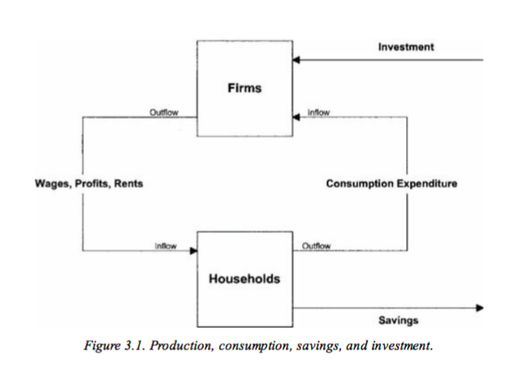

Tutorial 2: the Solow model
We are going to dig into into the seminal model of growth theory in macroeconomics: the Solow model.
Quick model summary
Structure of the economy: firms and consumers (no state). Firms use (and pay) capital and labor to produce an output. Output (=income) is either consumed or saved by households:
\[ Y_t = C_t + I_t \]
Production Function: a representative firm produces output using a Cobb-Douglas production function: \[ Y_t = F(K_t, A_tL_t) = K_t^\alpha (A_tL_t)^{1-\alpha}\] where \(Y\) is output, \(K\) is capital, \(L\) is labor and \(A\) is technology. where \(0 < \alpha < 1\). Using capital comes at rental price \(r\) and labor comes at price \(w\) (the wage).
Capital accumulation: capital accumulates through savings and depreciates geometrically
\[ K_{t+1} = I_t + (1-\delta) K_t\]
Saving rate: investment is a constant fraction of output
\[ I_{t} = sF(K_t,A_tL_t)\]

Definitions
- Steady state: trajectory where all variables are constant
- Balanced growth path: trajectory such that per capita variables grow at a constant rate (not necessarily the same) and the capital to output ratio is constant
Exercise
1. Warm-up: Returns to scale
Let \(\lambda > 1\), if \(F(\lambda X, \lambda Y) < \lambda F(X,Y)\), the function has decreasing returns to scale (and increasing for \(>\)). If \(F(\lambda X, \lambda Y) = \lambda F(X,Y)\), the function has constant returns to scale. For the following functions, state if they exhibit positive, constant, or negative returns to scale.
- \(y_1 = 10x^2y^2\)
\[ y_1(\lambda x, \lambda y) = \lambda^4 y_1(x,y) > \lambda y_1(x,y) \text{ , increasing returns to scale} \]
- \(y_2 = \frac{1}{2}x^{1/3}y^{1/2}\)
\[ y_2(\lambda x, \lambda y) = \lambda^{5/6} y_2(x,y) < \lambda y_2(x,y) \text{ , decreasing returns to scale} \]
- \(y_3 = x + 2y\)
\[ y_3(\lambda x, \lambda y) = \lambda y_3(x,y) = \lambda y_2(x,y) \text{ , constant returns to scale} \]
- \(y_4 = \ln(xy), x>1,y>1\)
\[ y_4(\lambda x, \lambda y) = 2\ln(\lambda) + y_4(x,y) \]
Depends on initial level. Fix \(\lambda = e\) so that \(2\ln(\lambda) =2\))
For \(xy = e\), \(y_4(\lambda x, \lambda y) = 3 > \lambda y_4(x,y)\)
For \(xy = e^3\), \(y_4(\lambda x, \lambda y) = 5 < \lambda y_4(x,y)\)
2. Solve the firm’s maximization problem
Consider the function above (\(Y_t = K_t^{\alpha} (A_tL_t)^{1-\alpha}\)).
- Show that if \(K=0\) and/or \(L=0\) production does not occur
Immediate
- Show that the production function has constant returns to scale
\[ F(\lambda K_t, \lambda L_t) = \lambda K_t^{\alpha} (A_tL_t)^{1-\alpha} = F(K,L) \]
- Show that marginal productivity is positive for capital and labour
\[ F_K(K_t,L_t) = \alpha K_t^{\alpha-1} (A_tL_t)^{1-\alpha} >0 \]
\[ F_L(K_t,L_t) = (1-\alpha) K_t^{\alpha} (A_t)^{1-\alpha} L_t^{-\alpha} >0 \]
- Show that marginal productivity is decreasing for capital and labour
\[ F_{KK}(K_t,L_t) = \alpha (\alpha-1) K_t^{\alpha-2} (A_tL_t)^{1-\alpha} <0 \]
\[ F_{LL}(K_t,L_t) = (1-\alpha) (-\alpha) K_t^{\alpha} (A_t)^{1-\alpha} L_t^{-\alpha-1} <0 \]
- Write the down the profit maximization program (maximizing profit with respect to K and L) and derive its first order conditions
\[ \max_{K,L} Y_t - rK_t - wL_t \]
FOC with respect to K implies: \(F_K(K_t,L_t) = \frac{dF}{dK} = r\)
FOC with respect to L implies: \(F_L(K_t,L_t)=\frac{dF}{dL} = w\)
- Show that all output is needed to pay capital and labor
Differentiating both sides of the constant return to scale equation with respect to \(\lambda\) yields:
\[ F_{K}(\lambda K_t,\lambda L_t)K_t +F_{L}(\lambda K_t,\lambda L_t)L_t = F(K_t,L_t) \]
Evaluating it at \(\lambda = 1\) (constant returns to scale is true whatever \(\lambda\) and in particular for \(\lambda = 1\)) and and plugging the results of the two FOC of the profit maximization problem yields the result.
3. Constant population and technology
For now, we consider that technology and labor (=population) are constant (\(A_t = A\), \(L_t = L\)): no population growth, no technological progress.
- Using the capital accumulation equation, show that the ratio \(\frac{K_{t+1}}{K_t}\) goes to \(\infty\) as \(K_t\) goes to 0 and is lower than 1 when \(K_t\) goes to \(\infty\)
\[ g(K_t) = \frac{K_{t+1}}{K_t} = s \left(\frac{A_tL_t}{K_t}\right)^{1-\alpha} + 1-\delta \]
It tends to \(+\infty\) as \(K_t \rightarrow 0^+\), and \(0^+\) as \(K_t \rightarrow +\infty\)
- Show that there is a unique steady state level of capital \(k^*\) and solve for it
Plugging \(K = K_{t+1} = K_t\) and solving for it in the equation above yields:
\[ k^* = AL \left(\frac{s}{\delta}\right)^{\frac{1}{1-\alpha}} \]
- How does the \(k^*\) vary with \(s\), \(\delta\), \(A\), \(L\) ? Interpret
Capital accumulation is facilitated by a high saving rate \(s\) , a low depreciation rate \(\delta\) and by high levels of effective labor \(AL\) (additional units of capital are highly productive up to a higher level of \(K\) )
4. Population and technology growth
We now assume that population grows at constant rate \(n\), and technology at rate \(g\):
\[L_{t+1} = (1+n) L_t\]
\[A_{t+1} = (1+g) A_t\]
We respectively denote \(y_t=Y_t/L_t\) and \(k_t=K_t/L_t\), the per-worker production and capital
We further define \(\hat{y_t}=\frac{Y_t}{A_t L_t}\) and \(\hat{k_t}=\frac{K_t}{A_tL_t}\) the production and capital per effective unit
Dividing the capital accumulation equation by \(A_tL_t\), show that
\[\hat{k_{t+1}} (1+n)(1+g)= (1-\delta)\hat{k_t} + s F(\frac{K_t}{A_tL_t},1)\]
Dividing the capital accumulation by \(A_tL_t\) yields:
\[ \frac{K_{t+1}}{A_tL_t}= (1-\delta)\hat{k_t} + s \frac{F(K_t,A_tL_t)}{A_tL_t} \]
Noticing that the left hand side is \(\frac{K_{t+1}}{A_{t+1}L_{t+1}} (1+n)(1+g)\) and that \(\frac{1}{A_tL_t}F(K_t,A_tL_t) = F(\frac{K_t}{A_tL_t},1) = F(\hat{k}_t,1)\) because of constant returns to scale yields the result.
- Show that there is a steady state level of capital per effective unit \(\hat{k^*}\) equal to:
\[ \hat{k^*} = \left(\frac{s}{(1+n)(1+g)-1+\delta}\right)^{\frac{1}{1-\alpha}} \]
Plugging \(\hat{k} = \hat{k}_{t+1} = \hat{k}_t\) and solving for it in the equation above yields the result.
Noticing that \(\hat{y} = \hat{k}^\alpha\) and plugging \(\hat{k}^*\) yields steady state per effective unit output:
\[ \hat{y^*} = \left(\frac{s}{(1+n)(1+g)-1+\delta}\right)^{\frac{\alpha}{1-\alpha}} \]
- Show that per capita outcomes \(y\) and \(k\) are on a balanced growth path. What is their respective growth rates?
\(k_t = A_t \hat{k}_t\) and \(y_t = A_t \hat{y}_t\). Plugging steady state levels of \(\hat{k}^*\) and \(\hat{y}^*\), then computing the equilibrium growth rate of capital and output yields:
\[ \frac{k_{t+1}}{k_t} = \frac{y_{t+1}}{y_t} = (1+g) \]
5. Discussion
- What makes this model a simplification of reality?
- Why cannot it explain all differences in output growth and per capita level across economies?
Firms:
Imperfect competition and appropriated innovation (through patents) yields profits and investment into private R&D
Heterogeneous firms/sectors need various “qualities” of physical and human capital, and different “vintages” of technology (a technology can get outdated)
Households:
- Optimize and decide endogenously upon their labor supply, saving rate, fertility, education level (human capital)
State:
affects available consumption through taxes and transfers
affects investment into public research and public education (technological progress and human capital)
provides institutions that affect firms’ and households’ decisions
Trade (open economy):
- Affects net investment in the country, and available output for consumption through imports/exports
Link to Aghion’s seminar on the evolution of growth theory (in French with possible subtitles) Growth theory and policies - Philippe Aghion - Collège de France
A bit more of a self-promotion of his work, but also interesting: Inaugural lecture of the School of Management & Impact - Philippe Aghion - Sciences Po
Note: A useful (although far from mandatory for this class) handbook for undergraduate macroeconomics is Macroeconomics by N. Gregory Mankiw